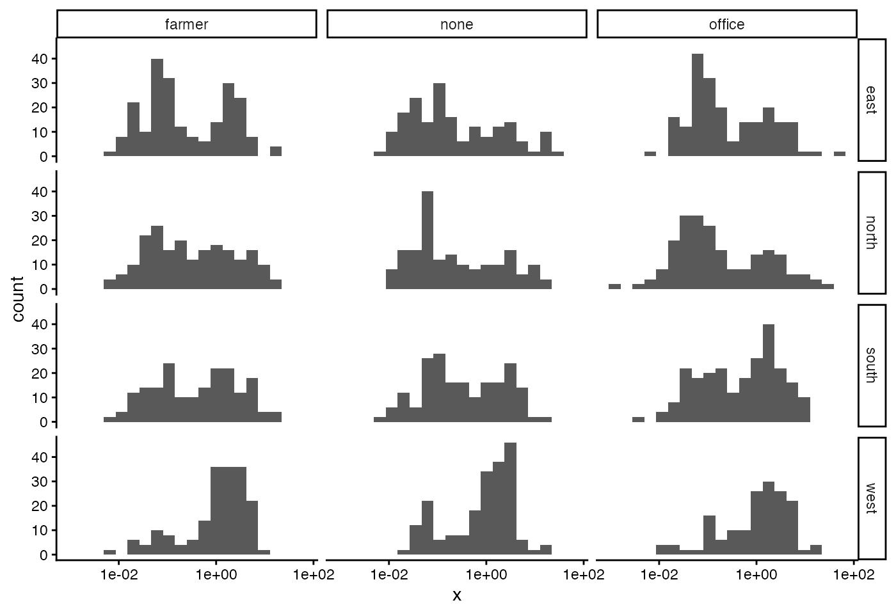
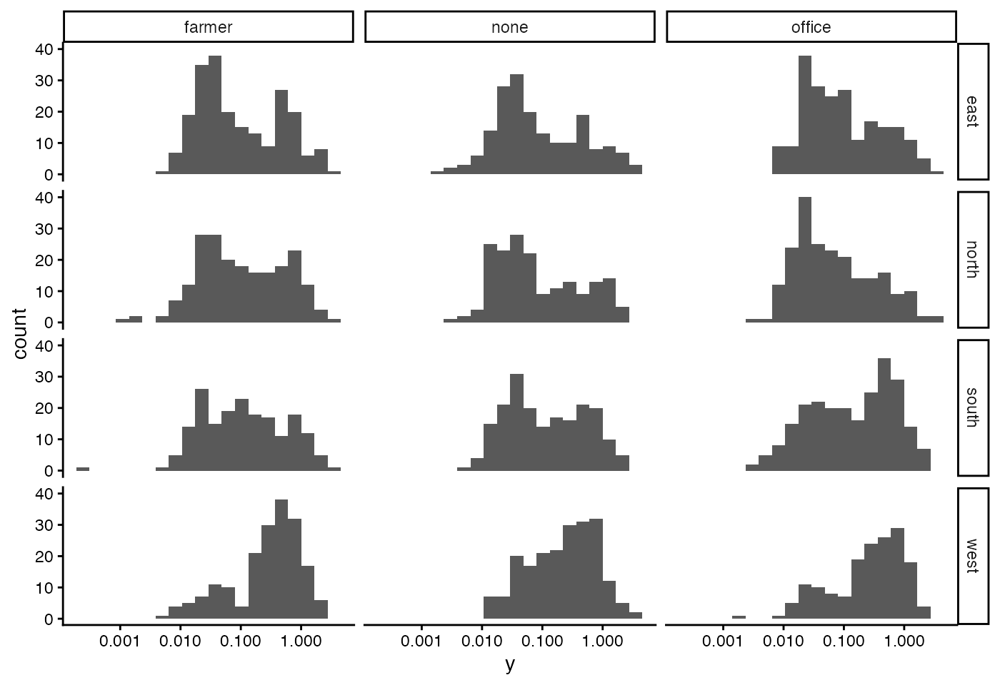
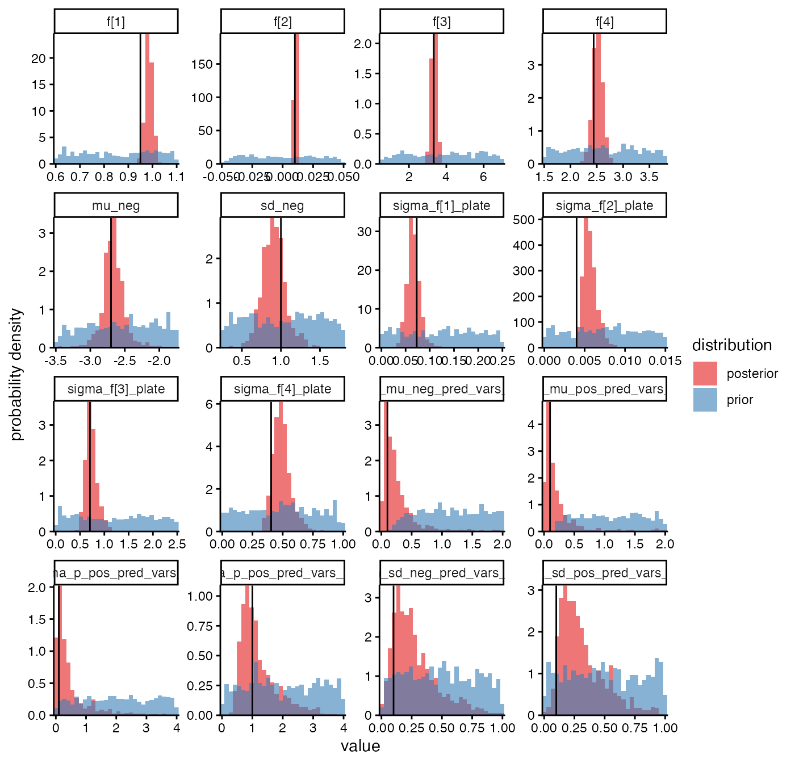
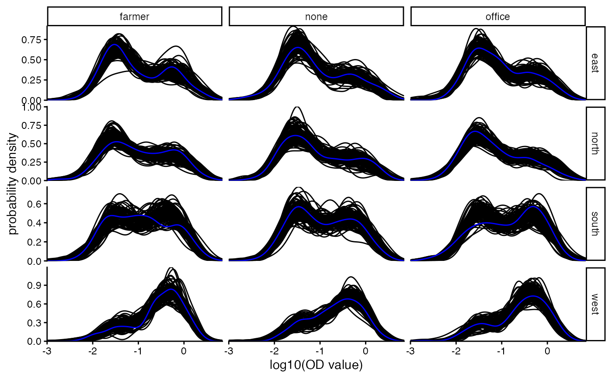
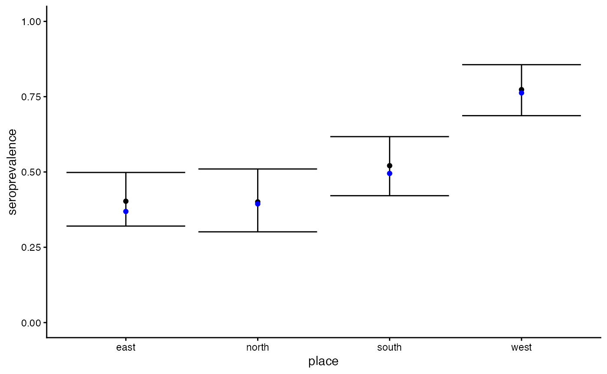
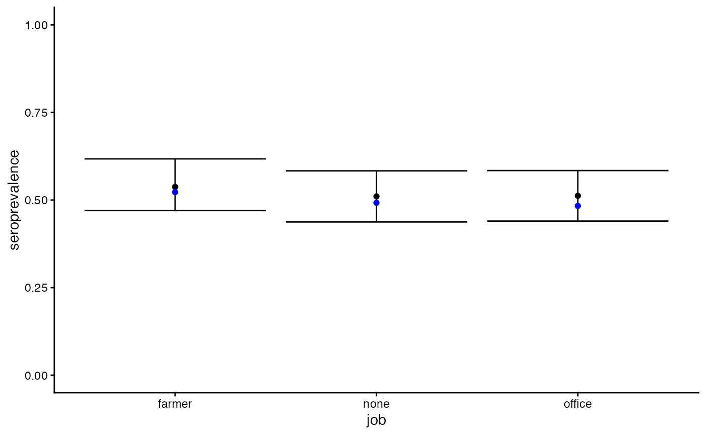
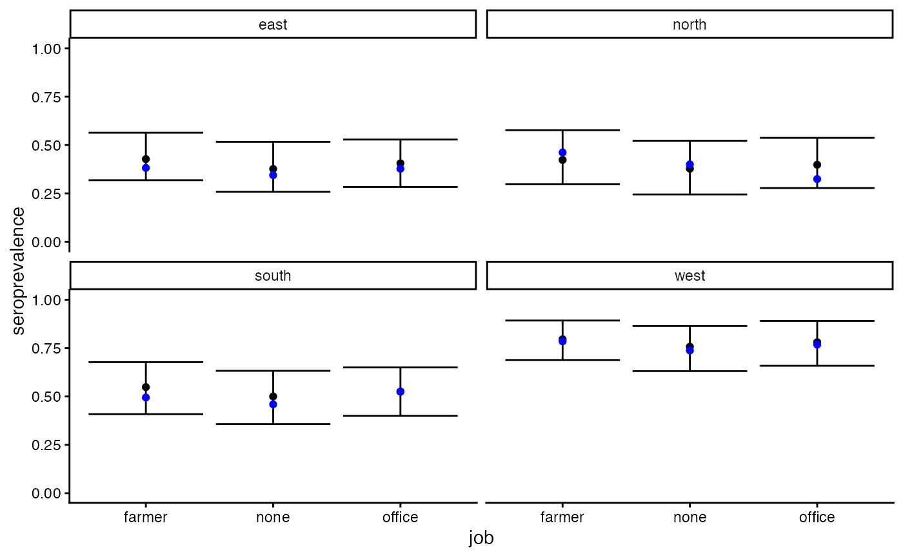

regression_models.RmdRead the vignette ‘Basic estimation on simulated data’ before reading this. Here we build upon the simpler vignette by showing how to do simulation and inference with regression models for the five parameters of the mixture model for x: p_pos (seroprevalence), mu_pos and mu_neg (the mean x for seropositives and seronegatives), sd_pos and sd_neg (the standard deviation for seropositives and seronegatives).
Let’s simulate a population comprised of different jobs and places. p_pos varies by place (a lot) and job (a little); the other parameters vary a little by place.
places <- c("north", "south", "east", "west")
jobs <- c("office", "farmer", "none")
data <- simulate_data(seed = 12345,
num_plate = 30,
x_mix_pred_vars = list(
p_pos = list(place = places, job = jobs),
mu_pos = list(place = places),
mu_neg = list(place = places),
sd_pos = list(place = places),
sd_neg = list(place = places)),
x_mix_pred_vars_sds = list(
p_pos = c(place = 1, job = 0.1),
mu_pos = c(place = 0.1),
mu_neg = c(place = 0.1),
sd_pos = c(place = 0.1),
sd_neg = c(place = 0.1)))
df_sam <- data$df_sam
df_cal <- data$df_cal
df_plate <- data$df_plate
param_true_values_list <- data$params
x_mix_pred_vars_names <- data$x_mix_pred_vars_namesPlot the simulated sample data, first histogramming the x values, stratifying by the distinct subpopulations:
ggplot(df_sam) +
geom_histogram(aes(x = x), bins = 20) +
facet_grid(place ~ job) +
scale_x_log10()
And show the distributions of the y values too:
# With default values, y is rarely negative; restrict to positive for visibility
ggplot(df_sam %>% filter(y > 0)) +
geom_histogram(aes(x = y), bins = 20) +
facet_grid(place ~ job) +
scale_x_log10()
Prepare for and run Stan as we did in the simpler vignette.
priors_list <- get_priors()
data_wrangled <- wrangle_data(
df_sam = df_sam,
df_cal = df_cal,
priors_list = priors_list,
x_mix_pred_vars_names = x_mix_pred_vars_names
)
df_sam <- data_wrangled$df_sam
df_cal <- data_wrangled$df_cal
df_plate <- dplyr::left_join(df_plate, data_wrangled$df_plate, by = "plate")
capture.output({
df_posterior <- run_stan(data_wrangled = data_wrangled)
df_prior <- run_stan(data_wrangled = data_wrangled, distribution = "prior")
})For each of the population-level parameters we plot the posterior, prior and true value, just for 16 parameters for better visibility.
param_true_values_vector <- wrangle_true_params(
param_true_values_list = param_true_values_list,
data_descriptors = data_wrangled$data_descriptors)
mastiff::plot_posterior(
posterior_samples = df_posterior,
prior_samples = df_prior,
params_desired = names(df_prior)[1:16],
true_param_values = param_true_values_vector,
skip_stanfit_to_dt = TRUE)
df_posterior has columns named
y_sam_sim_unconditional[1],
y_sam_sim_unconditional[2] etc. which contain posterior
predicted y values for new set of sampled individuals with the same
distribution of covariates (i.e. partitioned into the same
subpopulations, in this example based on job and place) as in the
dataset analysed. The integer in square brackets indexes the sample
replicate as in df_sam$which_sam_rep; we merge
df_sam into df_posterior to associate each
predicted y value with the appropriate subpopulation. We
plot the subpopulation-level distributions of y values: the empirical
distribution in blue, and the posterior predictive distribution in
black.
df_y_sim <- df_posterior %>%
select(starts_with("y_sam_sim_unconditional[")) %>%
filter(row_number() %% 10 == 0) %>% # downsample for speed
mutate(sample = row_number()) %>%
pivot_longer(-c("sample"), names_to = "param") %>%
tidyr::extract(param,
into = "which_sam_rep",
regex = "y_sam_sim_unconditional\\[([0-9]+)\\]") %>%
mutate(which_sam_rep = as.integer(which_sam_rep)) %>%
left_join(df_sam, by = "which_sam_rep") %>%
mutate(value = log10(value))
ggplot() +
geom_density(data = df_y_sim,
aes(x = value,
group = sample),
color = "black") +
geom_density(data = df_sam,
aes(x = log10(y)),
color="blue") +
coord_cartesian(expand = F) +
facet_grid(place ~ job, scale = "free_y") +
labs(x = "log10(OD value)",
y = "probability density") +
xlim(-3, NA)
As discussed in the supplementary information section ‘Subtleties of
seroprevalence when stratified’ of the dvsb scientific article, there
are (at least) two ways of estimating seroprevalence in subpopulation
stratifications. The first is a ‘purely parametric’ estimator, obtained
by adding the overall p_pos parameter and all the
regression coefficients associated with the covariates for
p_pos, marginalising over any covariates you want to
disregard in the definition of your subpopulation of interest, and
finally taking the posterior distribution of the resulting quantity. The
second is posterior predicted seroprevalence for a hypothetical new
dataset of exactly the same size and subpopulation composition as the
one sampled. Algorithmically, we arrive at this by making a posterior
prediction for a new serostatus for each sampled individual,
conditioning on which subpopulation they are in. This is what’s done in
dvsb to produce the parameters named
pos_sam_sim_unconditional[...] with an integer index for
the individual in the square brackets. We can then group the individuals
however we desire, calculate the seroprevalence within the group, and
then calculate the posterior distribution for this quantity. We
illustrate this below.
First extract from df_posterior the prediction, for each
individual and each sample from the posterior, the predicted positivity
(0 or 1). Link this back to each individual’s covariates: place and
job.
df_is_pos_sim <- df_posterior %>%
select(starts_with("pos_sam_sim_unconditional[")) %>%
mutate(sample = row_number()) %>%
pivot_longer(cols = -sample, values_to = "pos") %>%
tidyr::extract(name,
into = "id_sam_int",
regex = "pos_sam_sim_unconditional\\[([0-9]+)\\]") %>%
mutate(id_sam_int = as.integer(id_sam_int)) %>%
left_join(df_sam %>%
select(id_sam_int, place, job) %>%
distinct(),
by = "id_sam_int")Then calculate quantiles of the posterior predictive distribution for seroprevalence when stratifying the population in different ways.
quantiles <- c(0.025, 0.5, 0.975)
# Stratify by place only
df_seroprevalence_sim_by_place <- df_is_pos_sim %>%
summarise(.by = c("place", "sample"), seroprevalence = mean(pos)) %>%
group_by(place) %>%
reframe(seroprevalence = quantile(seroprevalence, probs = quantiles),
quantile = quantiles) %>%
pivot_wider(names_from = quantile,
names_prefix = "quantile_",
values_from = seroprevalence)
# Stratify by job only
df_seroprevalence_sim_by_job <- df_is_pos_sim %>%
summarise(.by = c("job", "sample"), seroprevalence = mean(pos)) %>%
group_by(job) %>%
reframe(seroprevalence = quantile(seroprevalence, probs = quantiles),
quantile = quantiles) %>%
pivot_wider(names_from = quantile,
names_prefix = "quantile_",
values_from = seroprevalence)
# Stratify by place and job simultaneously
df_seroprevalence_sim_by_place_job <- df_is_pos_sim %>%
summarise(.by = c("place", "job", "sample"), seroprevalence = mean(pos)) %>%
group_by(place, job) %>%
reframe(seroprevalence = quantile(seroprevalence, probs = quantiles),
quantile = quantiles) %>%
pivot_wider(names_from = quantile,
names_prefix = "quantile_",
values_from = seroprevalence)Because this is simulated data, we can also calculate the true seroprevalence that was sampled in each of these stratifications.
df_is_pos_true <- df_sam %>%
select(id_sam, place, job, pos) %>%
distinct()
df_seroprevalence_true_by_place <- df_is_pos_true %>%
summarise(.by = place, seroprevalence = mean(pos))
df_seroprevalence_true_by_job <- df_is_pos_true %>%
summarise(.by = job, seroprevalence = mean(pos))
df_seroprevalence_true_by_place_job <- df_is_pos_true %>%
summarise(.by = c("place", "job"), seroprevalence = mean(pos))Plot the predicted seroprevalence (black point and error bars, for the posterior median and central 95%) and the true seroprevalence (blue point) for each of the strata:
ggplot(data = df_seroprevalence_sim_by_place) +
geom_point(aes(place, quantile_0.5)) +
geom_errorbar(aes(place, ymin = quantile_0.025, ymax = quantile_0.975)) +
geom_point(data = df_seroprevalence_true_by_place,
aes(place, seroprevalence), col = "blue") +
labs(y = "seroprevalence") +
ylim(0, 1)
ggplot(data = df_seroprevalence_sim_by_job) +
geom_point(aes(job, quantile_0.5)) +
geom_errorbar(aes(job, ymin = quantile_0.025, ymax = quantile_0.975)) +
geom_point(data = df_seroprevalence_true_by_job,
aes(job, seroprevalence), col = "blue") +
labs(y = "seroprevalence") +
ylim(0, 1)
ggplot(data = df_seroprevalence_sim_by_place_job) +
geom_point(aes(job, quantile_0.5)) +
geom_errorbar(aes(job, ymin = quantile_0.025, ymax = quantile_0.975)) +
geom_point(data = df_seroprevalence_true_by_place_job,
aes(job, seroprevalence), col = "blue") +
facet_wrap(~place) +
labs(y = "seroprevalence") +
ylim(0, 1)